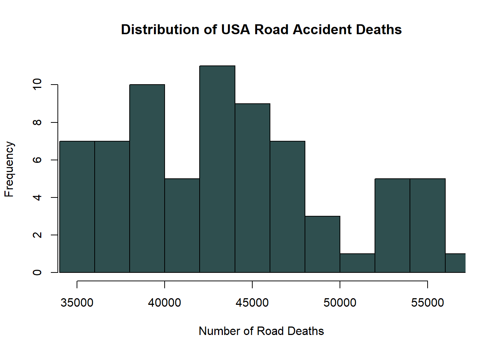

Code Here
#load dataset
roaddeaths <- read.csv("Road traffic accidents.csv")
# Filter the dataset for the year 2019
year_2019_data <- subset(roaddeaths, Year == 2019)
# Filter the dataset for USA
usa<- subset(roaddeaths, Country == "United States of America"
& Age.Group == "[All]" & Sex == "All")
# Access the "Number" column from the dataframe
usa_numbers <- usa$Number
# Create a histogram
hist(usa_numbers,
main = "Distribution of USA Road Accident Deaths",
xlab = "Number of Road Deaths",
ylab = "Frequency",
col = "darkslategrey", # Bar color
border = "black", # Border color
xlim = c(min(usa_numbers), max(usa_numbers)), # Set the x-axis limits
axes = TRUE, # Show axes
labels = FALSE, # Remove labels
probability = FALSE) # Set to FALSE to get frequency and not probability density